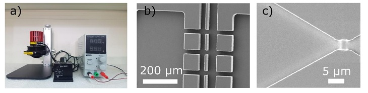
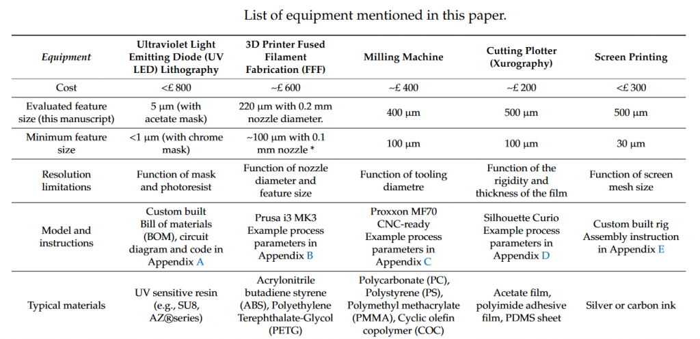

A low cost microfabrication toolbox

If you are interested in working with microfluidics and are having difficulty getting started, check out a paper by Jérôme Charmet, Rui Rodrigues, Ender Yildirim, Pavan Challa, Benjamin Roberts, Robert Dallmann, and Yudan Whulanza. The paper describes cheap solutions to several chamber fabrication techniques including photolithography, micromilling, 3D printing, xurography (knife cutting) and screen-printing.
The paper can be neatly summarized by it's first table:

The paper and it's supplementary materials contain links to bill of materials, codes, STL files, and process parameters necessary to build and use the fabrication tools and microfluidic chambers.